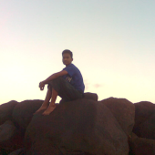

Hello My name is Acerudyn
I'm graphic and web designer based in Purworejo City, Indonesia. I have passion for making the web beautiful and creating design vector perfection. I work with Adobe Photoshop, Adobe Illustrator and Corel Draw.